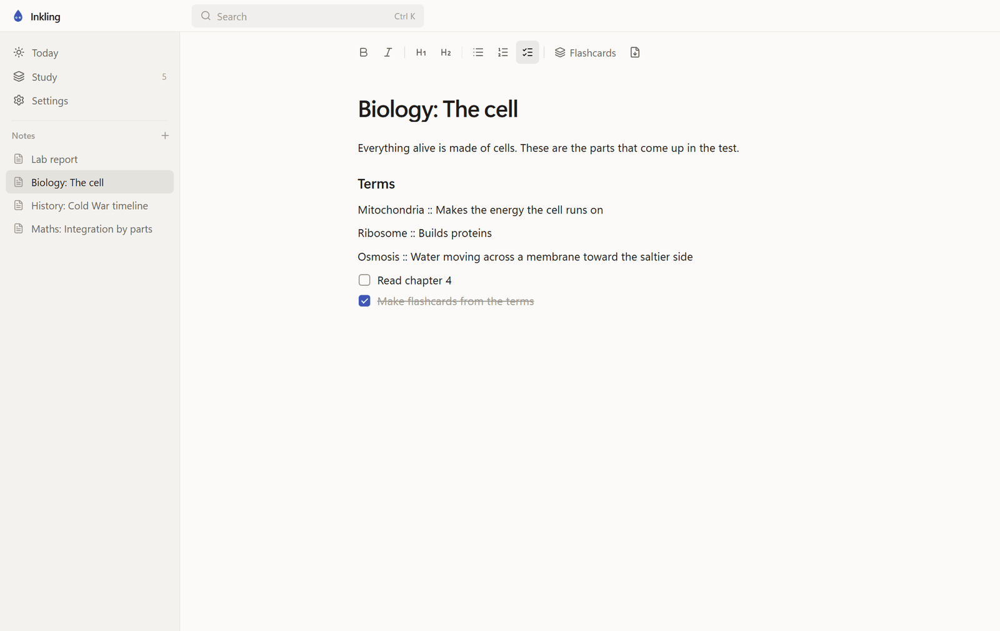

Inkling
A calm place for your notes, to-dos and flashcards. It works offline and you never sign up for anything.
Download for Windows
If Windows says it protected your PC, click More info, then Run anyway.
Inkling runs on Windows, macOS and Linux. Open this page on your computer to download it.

What it does
- Type anywhere and it saves as you go.
- Every open checkbox, from every note, shows up on one page called Today.
- Write Term :: Definition and the note turns into flashcards that come back right before you would forget them.
- Ctrl+K finds any note, to-do or deck.
- Your notes stay on your computer.
Use it with an AI assistant: download the skill.